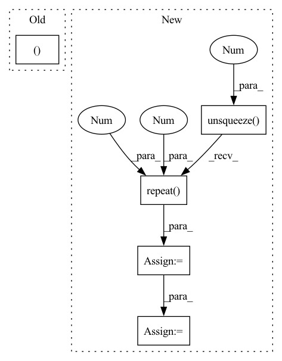

Pattern ID :24719
Before Change
:return:
batch_size, N, _ = tar_candidate.size()
tar_pred_prob, dx, dy, top_m_indices = self.forward(feat_in, tar_candidate)
// select the M output and gt
index_offset = torch.arange(0, batch_size, device=self.device).view(batch_size, -1).repeat(1, self.M).view(-1)After Change
batch_size, N, _ = tar_candidate.size()
// pred prob and compute cls loss
feat_in_prob = torch.cat([feat_in.unsqueeze(1).repeat(1 , N, 1 ) , tar_candidate], dim=2)
tar_candit_prob = self.prob_mlp(feat_in_prob).squeeze(-1) // [batch_size, self.N_tar]
_, indices = tar_candit_prob.topk(self.M, dim=1)
// select the M output and gt
index_offset = torch.arange(0, batch_size, device=self.device).view(batch_size, -1).repeat(1, self.M).view(-1)In pattern: SUPERPATTERN
Frequency: 5
Non-data size: 5
Instances Fragment ID: 76578736
Project Name: henry1iu/tnt-trajectory-predition
Commit Name: f39d0655e9e763f4dd61411259fdd4d214f6f34d
Time: 2021-04-09
Author: liu.jb.henry@gmail.com
File Name: core/model/layers/target_prediction.py
M Class Name: TargetPred
N Class Name: TargetPred
M Method Name: loss(6)
N Method Name: loss(6)
M Parent Class: nn.Module
N Parent Class: nn.Module
M File Name: core/model/layers/target_prediction.py
N File Name: core/model/layers/target_prediction.py
M Start Line: 92
M End Line: 107
N Start Line: 93
N End Line: 112
Before Change
T_tgt_src = T_21[kp_inds]
R_tgt_src = T_tgt_src[:, :3, :3]
t_tgt_src = T_tgt_src[:, :3, 3].unsqueeze(-1)
svd_loss, R_loss, t_loss = SVD_loss(R_tgt_src, R_tgt_src_pred, t_tgt_src, t_tgt_src_pred, config["gpuid"])
dict_loss = {"R_loss": R_loss, "t_loss": t_loss}
return svd_loss, dict_loss
After Change
R_tgt_src = T_tgt_src[:, :3, :3]
t_tgt_src = T_tgt_src[:, :3, 3].unsqueeze(-1)
batch_size = R_tgt_src.size(0)
identity = torch.eye(3).unsqueeze(0).repeat( batch_size, 1 , 1 ) .to(config["gpuid"])
loss_fn = torch.nn.L1Loss()
R_loss = loss_fn(torch.matmul(R_tgt_src_pred.transpose(2, 1), R_tgt_src), identity)
t_loss = loss_fn(t_tgt_src_pred, t_tgt_src)
svd_loss = t_loss + alpha * R_loss
dict_loss = {"R_loss": R_loss, "t_loss": t_loss}
return svd_loss, dict_loss
Fragment ID: 76578752
Project Name: utiasasrl/hero_radar_odometry
Commit Name: 6743b462d049c6197bb526b488f76355d1bba825
Time: 2021-05-30
Author: keenburn2004@gmail.com
File Name: utils/losses.py
M Class Name: AnonimousClass
N Class Name: AnonimousClass
M Method Name: supervised_loss(5)
N Method Name: supervised_loss(4)
M Parent Class:
N Parent Class:
M File Name: utils/losses.py
N File Name: utils/losses.py
M Start Line: 10
M End Line: 12
N Start Line: 4
N End Line: 27
Before Change
degree = adj_matrix.getnnz(axis=1)
self_weight = torch.tensor(1.0 / (degree + 1)).to(x)
att_score_norm = torch.cat([att_score_norm, self_weight])
edge_index, _ = add_self_loops(edge_index)
att_score_norm = att_score_norm.exp()
After Change
att_score_norm = torch.cat([att_score_norm, self_weight])
loop_index = torch.arange(0, adj_matrix.shape[0], dtype=torch.long,
device=edge_index.device)
loop_index = loop_index.unsqueeze(0 ).repeat(2 , 1 )
edge_index = torch.cat([edge_index, loop_index], dim=1)
att_score_norm = att_score_norm.exp()
Fragment ID: 76578707
Project Name: edisonleeeee/graphwar
Commit Name: ab086596136fa03b6152723efe2d64bdfb5548a9
Time: 2022-11-15
Author: cnljt@outlook.com
File Name: greatx/defense/gnnguard.py
M Class Name: GNNGUARD
N Class Name: GNNGUARD
M Method Name: forward(4)
N Method Name: forward(3)
M Parent Class: torch.nn.Module
N Parent Class: torch.nn.Module
M File Name: greatx/defense/gnnguard.py
N File Name: greatx/defense/gnnguard.py
M Start Line: 30
M End Line: 43
N Start Line: 28
N End Line: 52